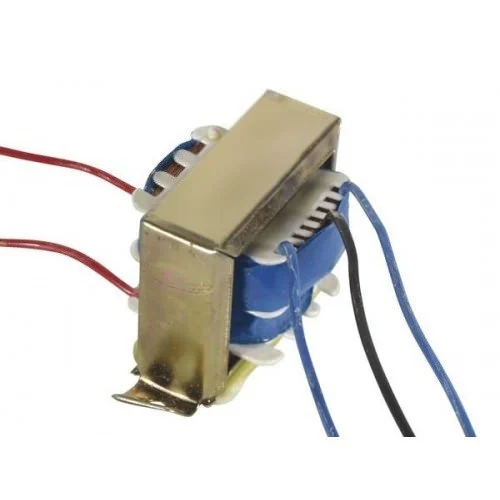
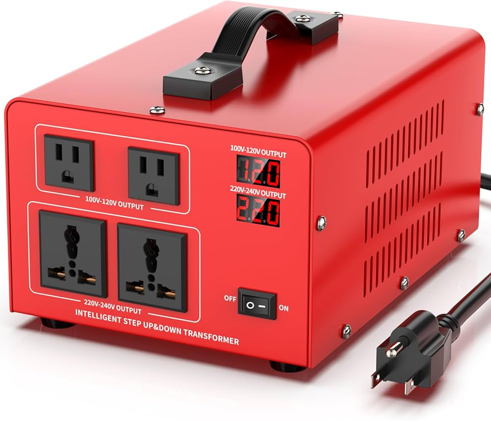
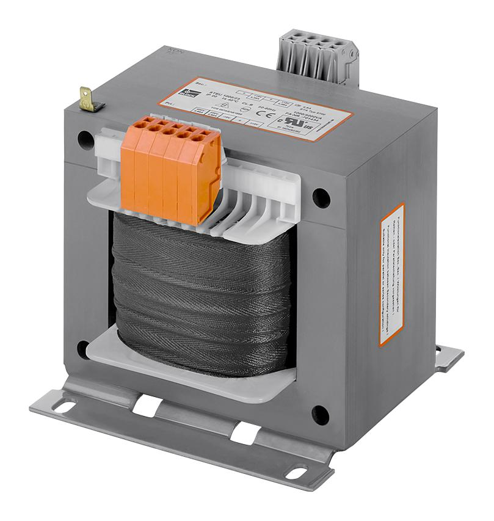

Welcome to ElectroSpecs | Explore Electronics Components | Learn & Build 🚀

SINGLE PHASE STEP UP TRANSFORMER
THREE PHASE STEP UP TRANSFORMER

AUTO STEP UP TRANSFORMER (AUTOTRANSFORMER TYPE)

ISOLATION STEP UP TRANSFORMER
HIGH FREQUENCY STEP UP TRANSFORMER